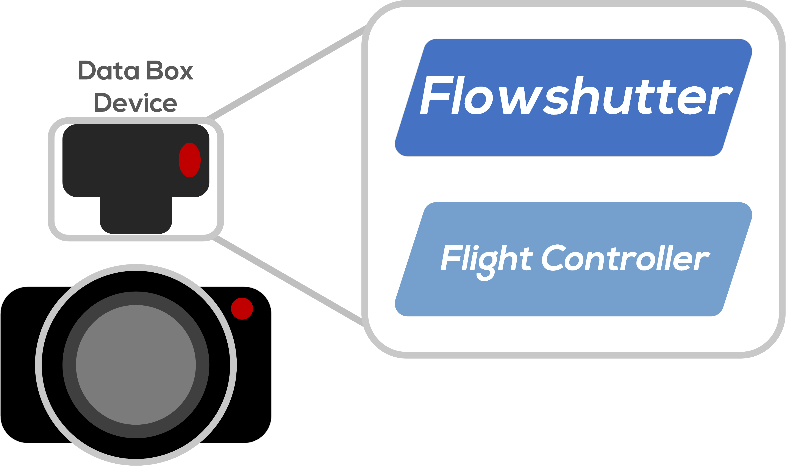
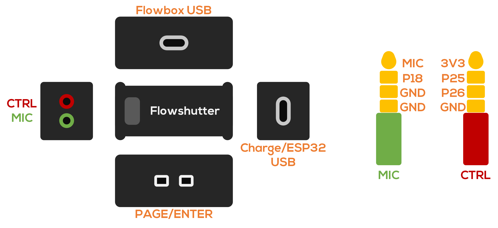
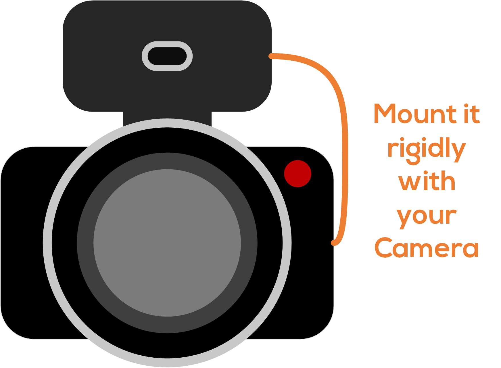
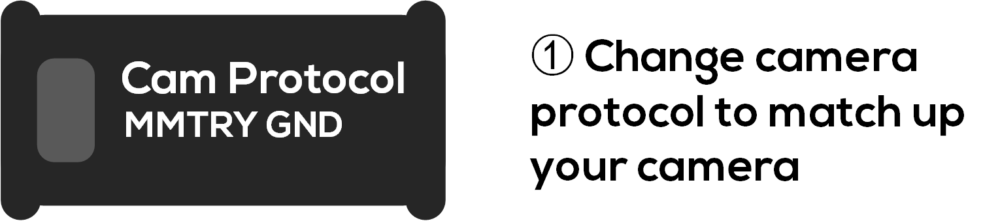
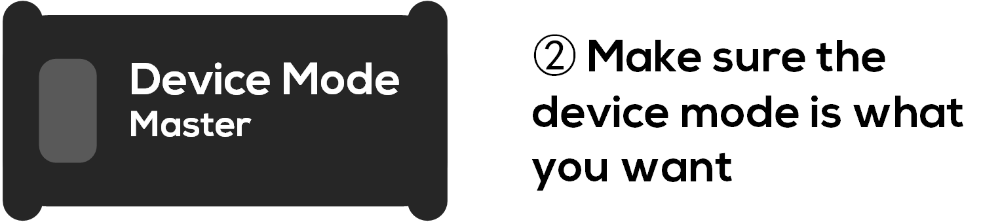
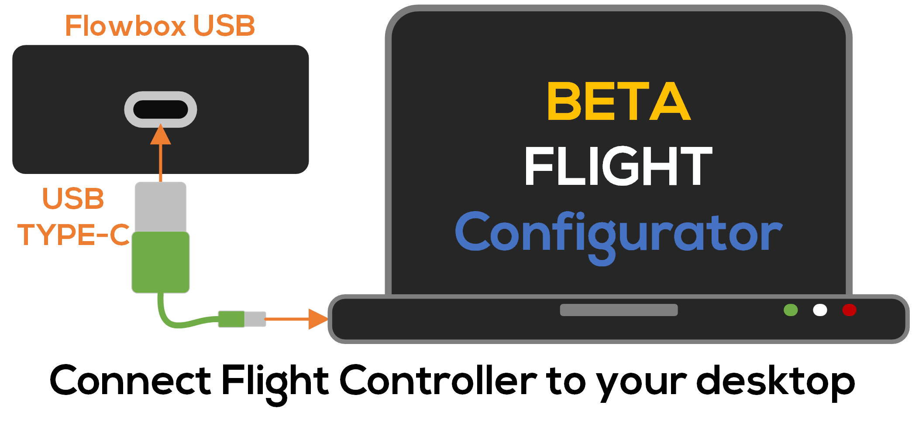
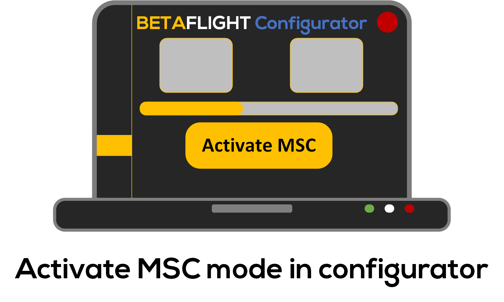
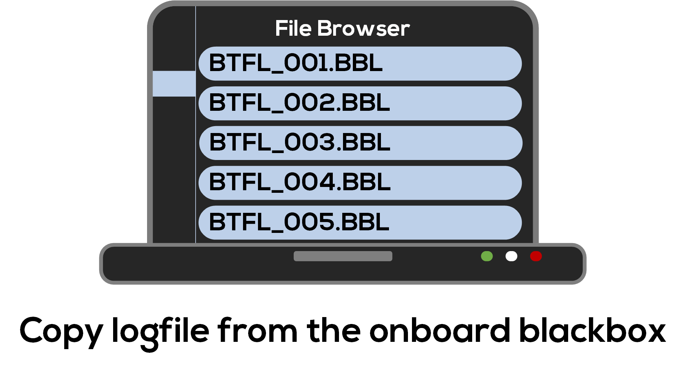
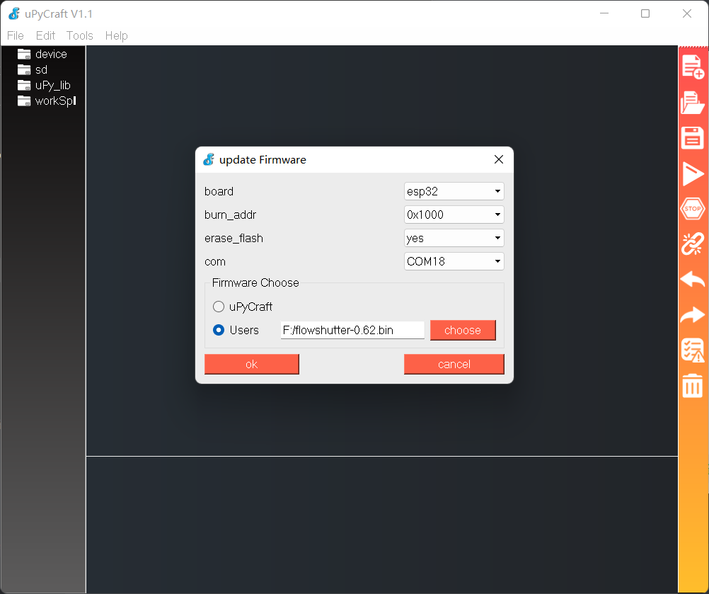

Quick Start for Flowshutter
This page assumes that you are using a commercial version of Flowshutter (depending on the manufacturer, it may be called differently, such as "stabilization box", "stabilization data box", "flowshutter box", etc), these commercial hardwares often contain a flowshutter board and a betaflight flight controller, as a whole. On this page we refer to these wholes as Flowshutter.

If you are using a DIY flowshutter, then you should clearly separate your flight controller from the flowshutter, and carefully consider the specific configuration of the corresponding parts in this tutorial on your own build.
Meet the hardware
Although hardware from different manufacturers varies, their main components should be the same - necessary parts of the flowshutter device/firmware to work properly.
At the time of writing this page, I only have the commercial version of NeutronRC hardware - NeutronRC SDB, so this page will give you a quick start based on that.

OLED screen
Flowshutter currently only support a single OLED screen, with 128x32 pixels.
Buttons
Flowshutter requires two physical buttons to complete the interaction, they are the PAGE button and the ENTER button
Camera control port
Flowshutter's control of the camera is achieved through the connection of physical wires to transmit control signals. So in order to be able to control your camera properly, you should use this port to properly connect with the camera's control interface.
Flowshutter USB (Charge/ESP32 USB)
This interface is used to upgrade the flowshutter firmware.
Please note the difference between "Flowshutter" and "flowshutter", the former is a physical entity, and the latter refers specifically to the firmware.
FC USB (Flowbox USB)
This interface is use to configure the flight controller (motion data logger), and export motion data.
Mount it to your camera
Please mount Flowshutter rigidly to your camera. For use in high-vibration environments (such as a large X8 drone), be sure to take vibration reduction measures for the camera as a whole.

You may have concerns about the installation orientation, but it doesn't matter, we have many flexible ways to offset the impact of different installation orientations. The easiest way will be introduced in the next section.
Config it for your camera
Select camera protocol

Select device mode

Reboot device
Config logger part
- Connecting FC to computer, open betaflight configurator and connect to FC (flowbox)
- Change orientation in
Configurationtab, until the drone's movement matched up with your camera movement inSetuptab.
Exatracting motion data
Connecting FC to computer

Activating MSC mode
In configurator, Blackbox tab, click Activate MSC button.

Copy motion data
Then the FC will become a readable USB drive, and you can copy the motion data from it to your computer. 
Flash firmware
For some special reason, it may be necessary to flash a new firmware in some cases, such as:
- The new firmware adds control support to your camera
- The new firmware has features you desperately need
- The new firmware fixes a bug you're currently experiencing
The following will briefly introduce the steps of firmware upgrade for you in the simplest way.
Flash flowshutter firmware
- Download uPyCraft IDE
- Download flowshutter firmware from GitHub release
- (Optional) Download and install CH340 driver for your computer
- Open uPyCraft IDE
- Connect Flowshutter USB to your computer
uPyCraft IDE->Tools->BurnFirmware- Configure burning parameters as below: 
- Hit
OKand wait until it finishes
Flash FC firmware
- Download betaflight configurator from Betaflight configurator release
- Connect your FC (flowbox) to your computer
Firmware Flashertab ->STM32F411->4.3->Load Firmware [Online]->Flash Firmware- Add gyroflow
logger-presetsas third party preset source. Check this page and/or this page for more information. - Connect to FC ->
Presetstab -> pick and apply the coorespondinggyroflow presetfor your device, e.g. NeutronRC SDB should pickNeutronRC SDBpreset.